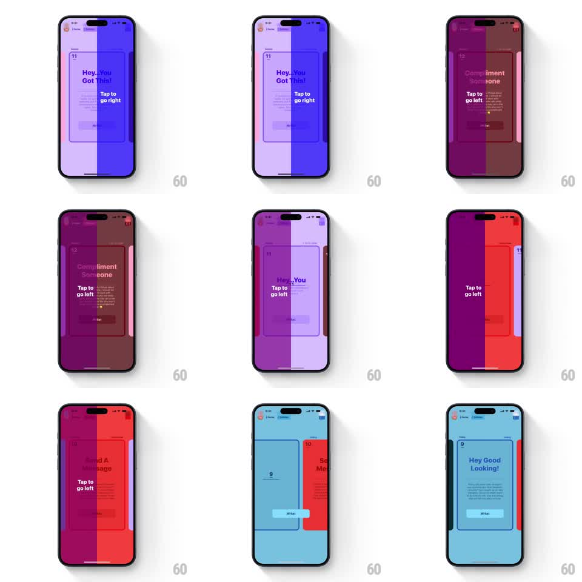

Media
Frame-by-frame

Rebuild this interaction 1:1: Bears Gratitude's tip cards - story-style cards that spring in from the left or right edge when you tap that side of the screen, with the whole background shifting color to match each new card.

Rebuild this interaction 1:1: Bears Gratitude's tip cards - story-style cards that spring in from the left or right edge when you tap that side of the screen, with the whole background shifting color to match each new card.
## Integration
Integration: stack-agnostic spec - springs given as stiffness/damping, timed motions as duration + curve; map every value to your framework and animation library of choice.
## Scene
Full-bleed colored background (each card owns a hue: violet, maroon, red, sky blue). A journal-style card sits centered with margins: card number top-left, a bold tip title ("Hey.. You Got This!", "Compliment Someone"), a "Tap to go right" / "Tap to go left" hint, body text, and a Write button. During a transition the outgoing and incoming cards are both visible, sliding past each other.
## Motion spec
Pattern: tap-edge pager with springy card swap and background color wipe.
- Tap the right third of the screen: the current card slides left and slightly scales down (to ~0.95) while the next card springs in from the right (spring stiffness ~260, damping ~22, ~450ms total).
- Tap the left third: mirror image - previous card springs in from the left.
- The background crossfades to the incoming card's color over the same ~450ms, so mid-transition the screen is split between two hues.
- The card number, title, and hint fade-slide with the card as one rigid unit - no per-element staggering.
- The incoming card starts slightly scaled up (1.05) and settles to 1.0 with the same spring.
## Calibration
- The spring should land with one soft settle, no double bounce - damping below ~18 gets wobbly.
- Background and card must travel together; a color change that lags the card reads as two separate animations.
## Reduced motion
Simple 200ms crossfade between cards; background color swaps with it.
## Don't miss
- Direction is honest: right tap always brings content from the right, left tap from the left, even at list ends (clamp, don't wrap).
- The hint text flips with direction ("Tap to go right" vs "Tap to go left") and matches where the user can actually go next.